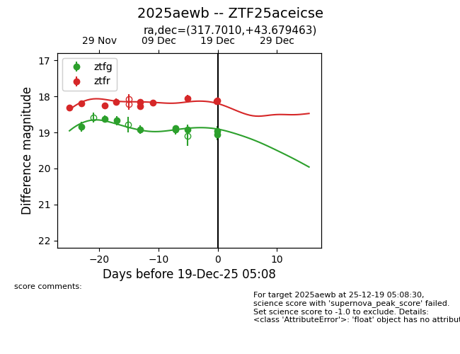
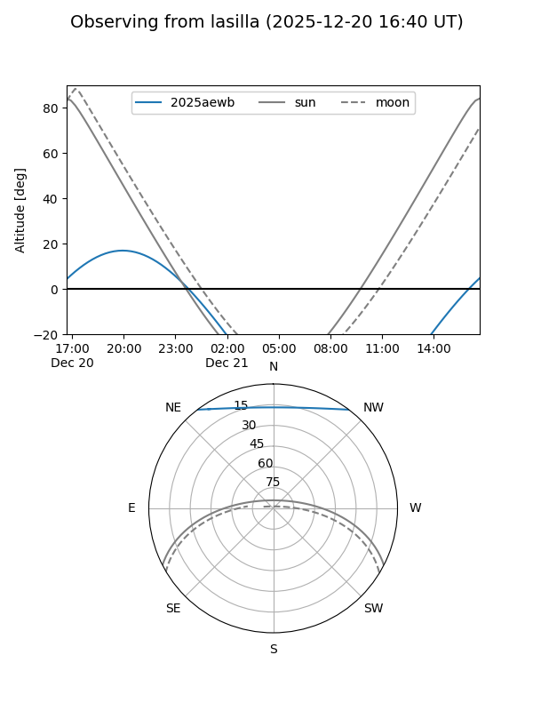
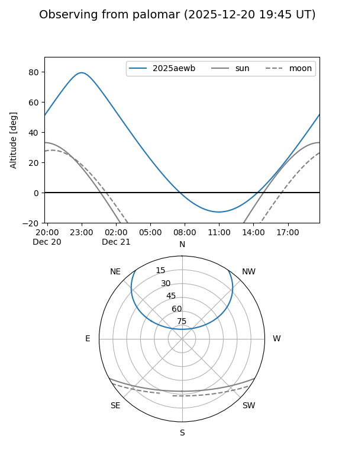

2025aewb
Target 2025aewb at 2025-12-21 05:48
Aliases and brokers:
FINK: fink-portal.org/ZTF25aceicse
Lasair: lasair-ztf.lsst.ac.uk/objects/ZTF25aceicse
ALeRCE: alerce.online/object/ZTF25aceicse
TNS: wis-tns.org/object/2025aewb
YSE: ziggy.ucolick.org/yse/transient_detail/2025aewb
alt names
ZTF25aceicse (ztf,fink_ztf)
2025aewb (tns,yse)
Coordinates:
equatorial (ra, dec) = 317.7010,+43.67946
equatorial (HMS+DMS) = 21:10:48.24,+43:40:46.07
galactic (l, b) = (86.4622,-3.02727)
Flags:
Photometry:
last ztfg=19.05, ztfr=18.18
11 ztfg, 11 ztfr detections
Lightcurve

Visibility


Additional plots